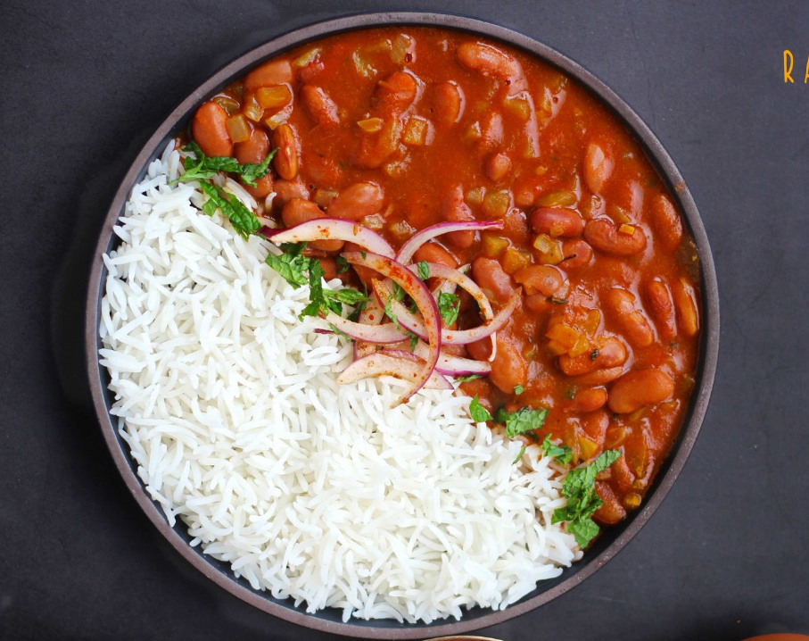
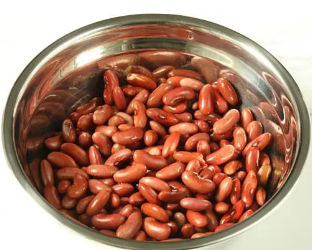
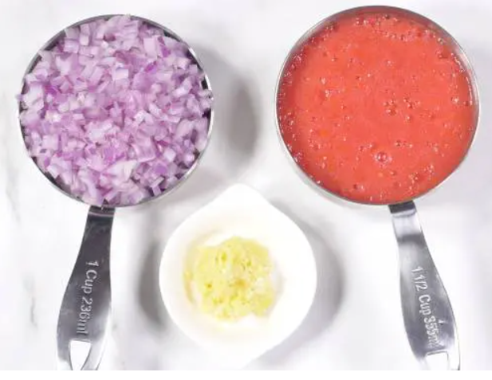
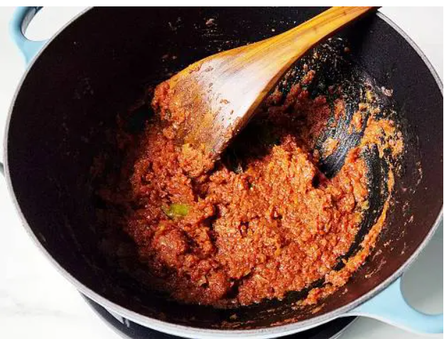
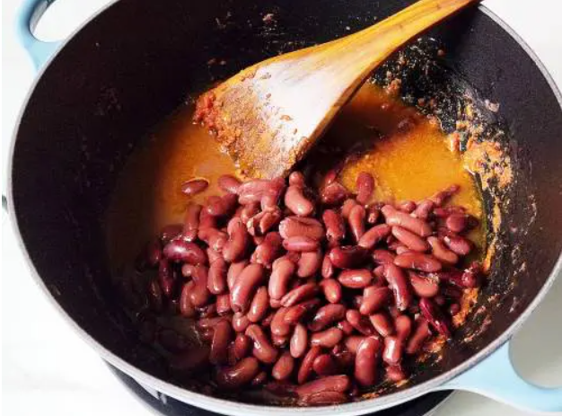
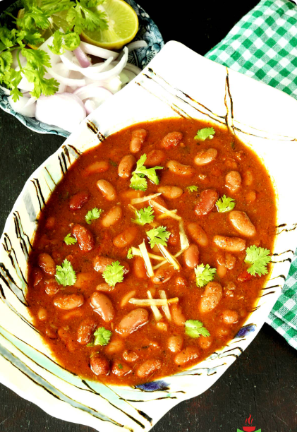

RAJMA CHAWAL

DESCRIPTION
This simple Indian dish consists of red beans (rajma) and cooked rice (chawal). Rajma is traditionally made with onions and tomato purée which acts as a gravy for the red beans. This dish makes for a complete vegetarian meal that is suitable for lunch or dinner.
If desired, rajma chawal can be flavored with a variety of spices such as chili peppers, cinnamon, bay leaves, ginger, garlic, coriander, and cumin. Although the dish is quite simple to prepare, it takes some time because the beans are typically soaked overnight before the preparation.
INGREDIENTS
- 1 cup red kidney beans
- 2 large onion
- 1 teaspoon ginger
- 1 tablespoon coriander powder
- 1/2 tablespoon powdered black pepper
- 1 cinnamon stick
- 2 green cardamom
- 2 clove
- 2 tablespoon mustard oil
- 2 large tomato
- 1 cup rice
- 1 tablespoon garlic
- 2 chopped green chilli
- 1 tablespoon cumin powder salt as required
- 1 tablespoon garam masala powder
- 1 black cardamom
- 1 tablespoon black pepper
- 1 tablespoon ghee
HOW TO MAKE RAJMA CHAWAL
-
Soak rajma overnight and pressure cook till they are soft
Wash the rajma and allow it to soak in water overnight. Wash it again and pressure cook with 2 cups of water, 1/2 tsp salt and turmeric. Once the rajma is soft and squishy, remove it from the heat and keep it aside.

- Chop onion-tomato and make ginger-garlic paste
Finely chop onions and keep aside, grate the tomatoes and keep them aside. Make a paste of ginger, garlic and green chillies.

- Prepare the rajma
In a deep bottomed pan, add mustard oil, when it gets heated add green cardamom, black cardamom, cinnamon, clove, peppercorn. Once they become fragrant, add onions and cook till they are golden brown. Now add the tomatoes and cook on high for 4-5 minutes. Add ginger- garlic-chilli paste, cumin powder, coriander powder and black pepper powder. Cook till the spices become fragrant and oil starts leaving the sides of the pan. Now add the rajma and one cup of water. Mix well and cook covered for 10 minutes. Once done, add the ghee. You can garnish with coriander leaves. Your rajma is ready.


- Steam cook rice and serve with Rajma
To make steamed rice without using a pressure cooker, wash 1 cup of rice in running water. Then, add them to a large and deep-bottomed pan with 4-5 cups of water in it. You can also add a little salt to it for taste. Once the rice is soft and double its size, strain the water. Spread the rice on a plate and allow it to cool for 2-3 minutes. Once the rice is done, serve hot with prepared rajma.

TIPS
- Serve rajma chawal with some onion slices and lemon wedges for a perfect lunch.
- You can also cook the rajma in an instant pot with 1 cup of water.
- Make sure you rinse the rajma properly before pressure cooking them.
- You can make a tomato puree with 2 tbsp cooked rajma for a thicker gravy.
BACK TO MAIN MENU